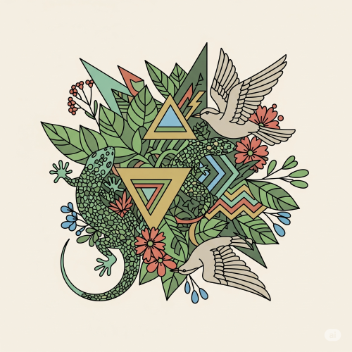
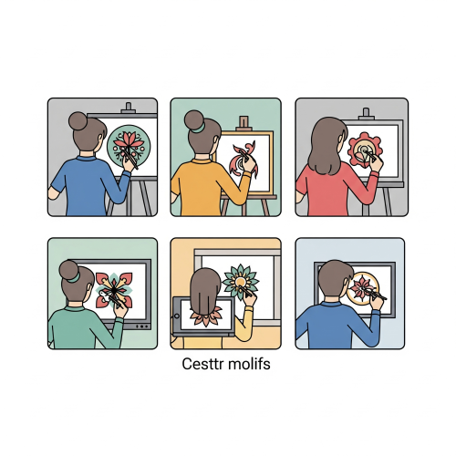

MOTIFS
Meaning of Motif
A motif is a simple design, shape, or pattern that is repeated to decorate a surface. Motifs are used to beautify objects and artworks.

They are commonly seen in traditional and modern Nigerian art such as fabrics, pottery, walls, beads, calabashes, wood carvings, and crafts. Motifs are important in both traditional and modern art for beauty, identity, and culture.
Sources of Motif
- Motifs can come from Nature – trees, leaves, birds, fish, sun, moon, flowers.
- Motifs can come from Man-made objects – drums, pots, stools, mats, weapons.
- Motifs can come from Symbols and signs – letters, numbers, tribal marks, religious symbols.
- Motifs can come from People and body parts – human figures, faces, hands, feet.
- Motifs can come from Imagination – creative ideas from the artist’s mind.
Types of Motif
A motif is a repeating design or pattern that holds symbolic meaning in a work of art or a story. It's used to develop themes and create a sense of harmony and rhythm. Common motifs include plant, animal, and geometric shapes.

- Plant Motifs – These are designs made from parts of plants such as stems, leaves, roots, pods, or vines.Example: maize leaves, yam tendrils, or cocoa pods.
- Floral Motifs – These are patterns based on flowers. They may be drawn naturally or in a stylized (designed) way.Example: hibiscus flower, sunflower, or rose.
- Geometrical Motifs – These are based on shapes like circles, triangles, squares, zigzags, spirals, and lines. Example: repeated triangle pattern on a wall or cloth.
- Traditional Motifs – These are designs from different Nigerian cultures. They are often used in Uli (Igbo), Nsibidi (Efik), or Yoruba carvings and textiles.Example: tribal symbols, facial marks, cultural signs.
- Animal Motifs (if included in your class notes) – These are based on animals like birds, lizards, snakes, elephants, and so on. Example: tortoise pattern used in calabash carving.
Uses of Motifs
- Motifs are used in Textile design (Adire, batik, tie-dye).
- Motifs are used in Pottery and calabash decoration.
- Motifs are used in Wall painting and murals.
- Motifs are used in Embroidery and weaving.
- Motifs are used in Wood and metal carving.
- Motifs are used in Festival and ceremony decorations.
How to Create or Apply Motifs
- Drawing or sketching.
- Painting with brush and colour.
- Stamping or printing.
- Carving into wood or gourd.
- Sewing or embroidery on fabric.
- Moulding in clay or plastic.
Qualities of a Good Motif
- It must be simple and bold.
- It should be easy to recognize.
- It must be attractive and neat.
- It should be repeated without confusion.
- It should match the design it is used for.
Motifs in Nigerian Traditional Art
Each Nigerian culture has its own special motifs:
- Yoruba: Use animal and geometric designs in Adire and carvings.
- Igbo: Use Uli motifs on walls and bodies.
- Efik/Ibibio: Use Nsibidi symbols to tell stories.
- Hausa: Use embroidery and wall designs in homes and palaces.
These motifs help to preserve culture and pass messages through art.